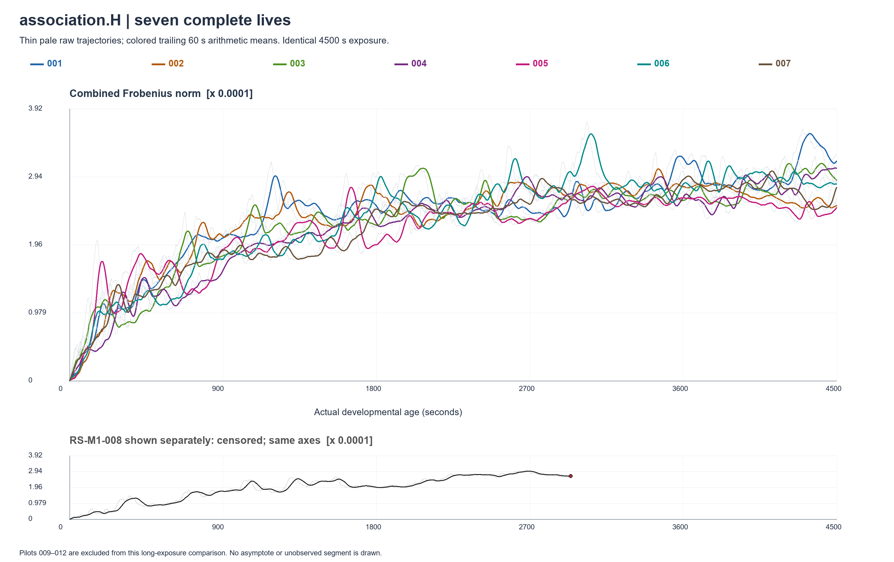

Loom — developmental curvesH / E / I developmental curves
Saved evidence only. Seven complete lives, one censored prefix, four pilots. No simulation or continuation.
Full reportThin raw measurements; dark trailing 60-second mean. Norm growth does not establish useful learning.
